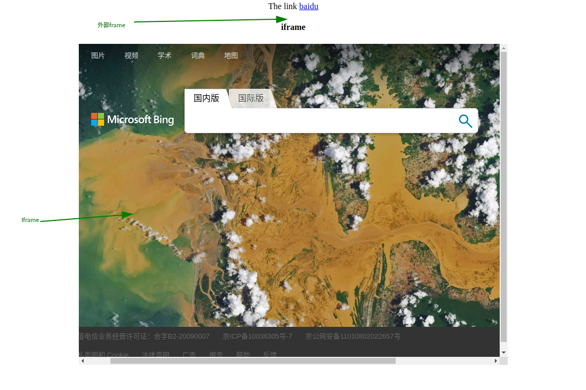

自动化测试简介
UI自动化的本质
定位元素：定位元素控件 eg：定位到输入框
操作元素：对元素控件进行点击，输入，拖动等操作
模拟页面动作：不能跨步骤的实现
断言结果：预期结果与实际结果的比对
生成报告：给出结果，False/Pass
适合自动化测试场景
需求不会频繁变动：项目的需求不会频繁的变动。产品在探索阶段频繁变动需求，就要修改测试用例，自动化脚本就要重新写
UI比较稳定：前端结构不会频繁变动，频繁变动UI，UI自动化就要变动了
项目周期较长：6个月以上的项目周期，时间短的话，没有时间写自动化
大量回归测试任务：敏捷开发，不断添加新功能，之前老给功能不会被轻易改动（对老功能回归，怕新功能影响到老功能）。只需要测试一遍做自动化就没有什么意义了，自动化看的是使用频率。
国内环境以敏捷开发为主，快速迭代，需要大量回归测试进行验证，节省时间和成本
（使用频率*每次减少的时间）- 投入时间 = 自动化收益
冒烟测试：（针对于新需求）对本次迭代新需求的P0级别case实现自动化。对主干功能进行验证
回归测试：（对老功能的回归）如：1.1.1版本是在1.0版本基础上做的改动，需要测试新功能对老功能是否有影响，可以交给自动化去完成（不断的维护，不断的添加）企业主要是回归测试中用自动化
问题：之前所在企业自动化覆盖率达到多少？
自动化测试覆盖率达到70%左右：项目稳定的，改动小的国企项目，对之前老功能不会有太大的影响，处于稳定期。
自动化测试覆盖率达到60%左右：项目周期比较长6个月甚至1年的手机项目，用户界面已经非常稳定，开发都在调试底层（音质，驱动…）
自动化测试覆盖率达到30%左右：一个月一个迭代，我们把P0级+一些核心部分的P1级case实现了自动化
自动化测试覆盖率达到10-15%左右：两周一个迭代，只做了核心的P0级case自动化
核心的几个场景实现了自动化：一周一个迭代，没有回归验证的话，会对用户产生非常大的影响。（核心的场景十几条case）
那些场景不适合做自动化
- 图片核对类的
- 视频内容核对类的（音频/画面）
- 交互性非常强的（通话后要听音质、内容等等无法用自动化验证）
UI自动化测试原则
一个Case完成一个功能点测试：一个自动化用例对应一条手工用例
一个脚本是一个完整的场景：一条完整的手工用例是一个脚本
eg: 打开京东，输入框搜索商家，在商家页面选择商品，加入购物车。核对订单页面有没有加入的商品，有通过。没有，失败。
脚本之间独立，不能有依赖：每条用例都是重新开始的，没有对其他脚本有依赖关系。
设置合适的检查点：用预期结果与实际结果比对，没有对比自动化没有意义
设计良好的框架
Selenium的特点
- 开源，免费：开始的自动化框架可能存在一些bug，开源便于修改
- 多浏览器支持: FireFox、Chrome（居多）、IE、Opera、 Edge;
- 多平台支持:Linux . Windows、MAC
- 多语言支持: Java、Python、Ruby、C#、JavaScript、C++;·对Web页面有良好的支持;
- 简单（API简单)、灵活（用开发语言驱动）
- 足够成熟：Selenium经历了三个版本，Selenium 1.0和 Selenium 2.0到现在的selenium3.0。Selenium 不是由单独一个工具构成的，而是由一些插件、类库组成，每个部分都有其特点和应用场景
selenium3.x介绍
- Selenium经历了三个版本，Selenium 1.0和 Selenium 2.0到现在的selenium3.0。Selenium3.x版本最大的变化应该是去掉了Selenium RC，Selenium RC是Selenium1.0的产物，Selenium2.0以WebDriver为主，也使用Selenium RC，到Selenium3.x完全去掉Selenium RC。
- Selenium3.0中 的Firefox驱动独立了。Selenium3.0之前，Selenium库中移动包含了Firefox浏览驱动，然而，现在Firefox浏览器驱动与Selenium库分离，单独提供下载。
- Edge 和safari原生驱动的支持
环境搭建
安装selenium
1 | pip install selenium -i https://pypi.tuna.tsinghua.edu.cn/simple |
下载 chromedriver或geckodriver https://github.com/mozilla/geckodriver/releases
1 | chrome官网下载 |
将下载的文件解压，放在如下位置
1 | unzip chromedriver_linux64.zip |
给予执行权限
1 | chmod +x /usr/bin/chromedriver |
八大元素定位法则
id：基于元素属性中的id的值来进行定位
webdriver.find_element_by_id()name：基于元素属性中的name的值来进行定位
webdriver.find_element_by_name()link text：主要用于超链接进行定位
webdriver.find_element_by_link_text()partial link text：link text的模糊查询版本，类似于数据库的like %。当匹配多个元素的时候，选取第一个元素。
webdriver.find_element_by_partial_link_text()classname：基于元素样式测试，易遇到重复内容
webdriver.find_element_by_class_name()tagname：用标签来进行定位
webdriver.find_element_by_tag_name()csselector：应用相对较多的一种行为，完全基于class属性来实现定位
webdriver.find_element_by_css_elector()- 绝对路径
1
2
3
4
5
6
7
8
9
10
11
12
13
14
15
16
17
18
19
20
21
22
23
24
25
26
27
28
29
30
31
32
33
34
35
36
37
38
39# 绝对路径demo1
from selenium import webdriver
from time import sleep
driver = webdriver.Chrome()
driver.get("https://cn.bing.com")
driver.find_element_by_css_selector('html>body>table>tbody>tr>td>div>div#sbox>div.search_controls>form>div>input').send_keys("星际穿越")
sleep(5)
driver.quit()
# 绝对路径demo2
from selenium import webdriver
from selenium.webdriver.common.by import By
from selenium.webdriver.common.keys import Keys
from selenium.webdriver.support import expected_conditions as EC
from selenium.webdriver.support.ui import WebDriverWait
from time import sleep
driver = webdriver.Chrome()
driver.get("https://cn.bing.com")
key = "星际穿越"
driver.find_element_by_css_selector('html>body>table>tbody>tr>td>div>div#sbox>div.search_controls>form>div>input').send_keys(key)
driver.find_element_by_css_selector('html>body>table>tbody>tr>td>div>div#sbox>div.search_controls>form>div>div>input').click()
# 找到输入框
element = WebDriverWait(driver,5,0.5).until(EC.presence_of_element_located((By.CSS_SELECTOR,'html>body>header>form>div>input')))
# 模拟键盘删除输入
# element.clear()
for i in key:
element.send_keys(Keys.BACK_SPACE)
sleep(1)
driver.quit()- 相对路径
1
2
3
4
5
6
7
8
9
10
11
12
13
14
15
16
17
18
19
20
21
22
23
24
25
26
27
28
29
30
31
32
33
34
35
36
37
38
39
40
41
42
43
44
45
46
47
48
49
50from selenium import webdriver
from time import sleep
driver = webdriver.Firefox()
driver.get("https://cn.bing.com")
# id选择器
# driver.find_element_by_css_selector('#scpl0').click()
# css选择器
# driver.find_element_by_css_selector('.b_searchbox').send_keys("星际穿越")
# 父级元素
# driver.find_element_by_css_selector('#scpl0/..')
# 子级元素
# driver.find_element_by_css_selector('.b_searchboxForm>input').send_keys("星际穿越")
# 多属性
# driver.find_element_by_css_selector('input[class="b_searchbox"][name="q"]').send_keys("星际穿越")
# 其他属性
# driver.find_element_by_css_selector('input[name="q"]').send_keys("星际穿越")
# first-child
# driver.find_element_by_css_selector('#sc_hdu>li:first-child>a').click()
# last-child
# driver.find_element_by_css_selector('#sc_hdu>li:last-child>a').click()
# nth-child(2) 父元素的第二个子元素
# driver.find_element_by_css_selector('#sc_hdu>li:nth-child(2)>a').click()
# nth-last-child(2) 父元素倒数第二个子元素
# driver.find_element_by_css_selector('#sc_hdu>li:nth-last-child(2)>a').click()
sleep(2)
driver.quit()xpath：目前应用最多的一种行为，基于页面结构进行定位
webdriver.find_element_by_xpath()绝对路径：从html根路径下一层一层往下数，找到对应的层级，从而找到元素
相对路径：基于匹配制度来查找元素，依照xpath语法结构
[] 表示筛选条件（查找函数）
如果要基于text来定位元素
在[]中添加text()=”文本内容”进行查找
例如：//a[text()=”登录”]
//input[contains(@id,’kw’)]
contains表示进一步查找，匹配项模糊查找
//input[contains(text(),’包含帅字的元素都是要找的元素’)]
XPath 相对路径
1
2
3
4
5
6
7
8
9
10
11
12
13
14
15
16
17
18
19
20
21
22
23
24
25
26
27
28
29
30
31
32
33
34
35
36
37
38
39
40
41
42
43
44
45
46
47
48
49
50
51
52
53
54
551. id定位 //input[(@id="kw")]
driver.get("https://cn.bing.com")
driver.find_element_by_xpath('//input[(@id="sb_form_q")]').send_keys("星际穿越")
2. tag定位
*匹配任何标签
driver.get("https://cn.bing.com")
driver.find_element_by_xpath('//*[(@id="sb_form_q")]').send_keys("星际穿越")
指定标签//input[(@id="kw")]
driver.get("https://cn.bing.com")
driver.find_element_by_xpath('//*[(@title="输入搜索词")]').send_keys("星际穿越")
3. clss定位 //input[@class="s_ipt"]
driver.get("https://cn.bing.com")
driver.find_element_by_xpath('//*[(@class="b_searchbox")]').send_keys("星际穿越")
4. name定位 //input[@name="wd"]
driver.get("https://cn.bing.com")
driver.find_element_by_xpath('//*[(@name="q")]').send_keys("星际穿越")
5. 其他属性 //input[@autocomplete="off"] 非隐藏属性
driver.get("https://cn.bing.com")
driver.find_element_by_xpath('//*[@autocomplete="off"]').send_keys("星际穿越")
6. 多属性组合 //input[@type="text" and @name="wd"]
driver.get("https://cn.bing.com")
driver.find_element_by_xpath('//input[@type="search" and @maxlength="100"]').send_keys("星际穿越")
7. 层级关系 //from[@id="form"]/span/input (/代表绝对路径，//代表相对路径)
driver.get("https://cn.bing.com")
driver.find_element_by_xpath('//form[@id="sb_form"]/div/input').send_keys("星际穿越")
8. 同一父级多个子元素 //*[@id="u1"]/a[2]
driver.get("https://cn.bing.com")
driver.find_element_by_xpath('//ul[@id="sc_hdu"]/li[3]/a').click()
模糊匹配
1.contains模糊匹配text：contains
如，通过模糊匹配text属性，找到bing首页的“学术”网站超链接
driver.get("https://cn.bing.com")
driver.find_element_by_xpath("//a[contains(text(),'学')]").click()
2.模糊匹配某个属性：contains
driver.get("https://cn.bing.com")
driver.find_element_by_xpath("//input[contains(@class,'earchbo')]").send_keys("星际穿越")
3.模糊匹配以xx开头：starts-with
driver.get("https://cn.bing.com")
driver.find_element_by_xpath("//input[starts-with(@class,'b_s')]").send_keys("星际穿越")
4.模糊匹配以xx结尾：ends-with [xpath2.0语法，一般浏览器只支持xpath1.0]
driver.get("https://cn.bing.com")
driver.find_element_by_xpath("//input[ends-with(@class,'box')]").send_keys("星际穿越")
操作浏览器的基本方法
浏览器大小控制
很多时候我们希望打开浏览器后，它能够全屏显示，也就是浏览器最大化。WebDriver提供了maximize_window()方法来将浏览器最大化
1 | from selenium import webdriver |
运行代码打开浏览器之后往往默认就是最大化显示，看不到maximize_window()方法的效果。有时希望打开浏览器后在指定的尺寸下运行，如800×600，WebDriver提供了set_window_size()方法来控制浏览器的大小。
1 | from selenium import webdriver |
浏览器的前进与后退
在通过浏览器访问网页时，有时会借助浏览器的前进与后退按钮查看浏览历史
1 | from selenium import webdriver |
页面刷新
1 | from selenium import webdriver |
获取页面URL地址与标题
WebDriver提供的current_url与title可以获取当前页面的URL地址与标题，这样在实际测试过程中，可以帮助我们校验实际结果是否与期望结果一致
1 | from selenium import webdriver |
获取浏览器类型
Selenium实现的自动化测试脚本，在实际过程中常常会与CI平台进行集成。当自动化测试程序运行失败时，如果通过测试结果知道自动化程序是在哪种类型的浏览器上运行失败的，则为我们排查问题提供了一个方向
1 | from selenium import webdriver |
关闭当前窗口与退出浏览器
1 | # 关闭当前窗口(与窗口切换例子一起展示) |
元素的操作方法
1 | # send_keys()输入 |
元素操作方法
清除元素
1 | # clear()清楚元素中已有的内容 |
提交表单
submit()方法用于提交form表单内容或者模拟回车操作，有时可替代click()方法
1 | from selenium import webdriver |
获取元素尺寸
size方法获取元素尺寸
1 | # 获取bing图标尺寸 |
获取元素的属性与文本
get_attribute()方法用于获取元素的相关属性
1 | # 获取name属性 |
鼠标操作
在自动化测试工程中，可能会遇到页面中的某个元素，需要把鼠标光标移动到该元素上面才能显示出来。当遇到这种情况时，可借助ActionChains类来处理。
在模拟使用鼠标操作时，需要先导入ActionChains类
from selenium.webdriver.common.action_chains import ActionChains
ActionChains用于生成用户的行为，可以模拟鼠标操作，如单击、双击、单击鼠标右键、拖曳等。所有的行为都存储在ActionChains对象中，再通过perform()方法执行所有Action-Chains对象中存储的行为。
perform()也是ActionChains类提供的方法，通常与ActionChains()配合使用
| 方法 | 说明 |
|---|---|
| click(on_element=None) | 单机鼠标左键 |
| content_click(on_element=None) | 单机鼠标右键 |
| double_click(on_element=None) | 双击鼠标左键 |
| darg_and_drop(source,target) | 拖拽到某个元素上然后松开 |
| perform() | 执行所有ActionChains中存储的行为 |
| release(on_element=None) | 在某个元素位置松开鼠标左键 |
| send_keys(*keys_to_send) | 发送某个键到当前焦点的元素 |
右击操作
context_click()方法是先定位一个元素，然后对定位的元素执行右击。首先要先定位一个元素，其次执行需要的操作，最后需要提交操作
1 | from selenium import webdriver |
双击操作
1 | from selenium import webdriver |
拖动操作（如何释放拖动元素）
drag_and_drop()方法实现元素拖动的功能，即通过鼠标拖曳某个元素到指定的元素后再松开
ActuonChains(driver).drag_and_drop_offset(source,100,0) 从原始位置拖拽到任一位置
1 | # 将学术链接元素拖动到搜索框中 |
鼠标指针悬停
通过move_to_element()方法，可以将鼠标指针悬停在一个元素上，从而查看该元素的一些提示信息
1 | from selenium import webdriver |
键盘操作
除了鼠标操作外，我们在操作浏览器的过程中还会用到一些键盘操作事件，例如按键盘回车键、回退键，通过键盘进行复制、粘贴等操作
Selenium提供了比较完整的键盘操作，同样的，在模拟键盘操作之前也需要导入Keys类
from selenium.webdriver.common.keys import Keys
常用键盘操作
| 引用方法 | 对应键盘 |
|---|---|
| send_keys(Keys.BACK_SPACE) | 删除键（BackSpace） |
| send_keys(Keys.SPACE) | 空格键（Space） |
| send_keys(Keys.TAB) | 制表符（Tab） |
| send_keys(Keys.ALTERNATE) | 换挡键（Alt） |
| send_keys(Keys.ENTER) | 回车键（Enter） |
| send_keys(Keys.SHIFT) | 大小写转换键（Shift） |
| send_keys(Keys.CONTROL,’a’) | 全选（Ctrl+A） |
| send_keys(Keys.CONTROL,’b’) | 复制（Ctrl+C） |
| send_keys(Keys.CONTROL,’x’) | 剪切（Ctrl+X） |
| send_keys(Keys.CONTROL,’v’) | 粘贴（Ctrl+V） |
| send_keys(Keys.F1) | F1键 |
| send_keys(Keys.F12) | F12键 |
| send_keys(Keys.PAGE_UP) | 向上翻页键（Page Up） |
| send_keys(Keys.PAGE_DOWN) | 向下翻页键（Page Down） |
| send_keys(Keys.LEFT) | 向左方向键（Left） |
| send_keys(Keys.RIGHT) | 向右方向键（Right） |
| send_keys(Keys.ESCAPE) | 回退键（Esc） |
1 | # 常见键盘操作 |
定位一组元素
WebDriver有8种定位单个元素的方法，以及与之对应的用于定位一组元素的8种方法
- 通过tag name定位一组元素

1 |
|
1 | from selenium import webdriver |
层级定位
如果被定位的元素无法通过自身属性来唯一标识自己，此时可以考虑借助上级元素来定位自己。举个生活中的例子，一个婴儿刚出生时还没有姓名与身份证号，此时给婴儿进行检查时往往会标注为“某某之女”。因为婴儿的母亲是确定的，找到母亲也就找到了婴儿。
XPath的层级与属性结合定位的原理也是如此。
在定位一组元素时，也可以用层级定位的方法。例如常见的表格、下拉列表框等，都可能用到层级定位。
省份 城市 辽宁 沈阳 吉林 长春 国籍 中国↓
1
2
3
4
5
6
7
8
9
10
11
12
13
14
15
16
17
18
19
20
21
22
23
24
25
26
27
28
29
30
31
32
33
34
35
36
37
38
39
40
41
42
43
44
<html lang="en">
<head>
<meta charset="UTF-8">
<title>表格&下拉列表</title>
<style>
.box{
width: 500px;
height: 800px;
margin: 20px auto;
text-align: center;
}
#qw{
border: 1px;
text-align: center;
}
</style>
</head>
<body>
<table id="qw">
<tr>
<th>省份</th>
<th>城市</th>
</tr>
<tr>
<td>辽宁</td>
<td>沈阳</td>
</tr>
<tr>
<td>吉林</td>
<td>长春</td>
</tr>
</table>
<br>
<div class="box">
<label for="">籍贯</label>
<select name="site" id="">
<option value="0">英国</option>
<option value="1">德国</option>
<option value="2">中国</option>
</select>
</div>
</body>
</html>1
2
3
4
5
6
7
8
9
10
11
12
13
14
15
16
17
18
19
20
21
22
23
24
25
26
27
28
29# 通过层级定位方式获取表格“吉林”这个单元格的值
# 在“国籍”下拉列表框中选择“中国”
from selenium import webdriver
from time import sleep
driver = webdriver.Firefox()
driver.get('file:///home/william/DYJ/software-test/21.Selenium/html/table.html')
table = driver.find_element_by_id("qw")
# 获取行
row = table.find_elements_by_tag_name("tr")
# 获取列数
col = row[0].find_elements_by_tag_name("th")
# 获取第一行第一列的值
Row_Col = row[1].find_elements_by_tag_name("td")[0].text
print(Row_Col)
# 在下拉列表框中选择第二个值
checkvalue = driver.find_element_by_name("site")
checkvalue.find_element_by_xpath('//option[@value="2"]').click()
sleep(2)
driver.quit()
等待时间
有时有些元素还没加载出来脚本就对其进行操作了，这样必然是无法成功的，所以需要加入等待时间，尽量不因为元素没加载出来而报错。
自动化测试过程中必然会遇到环境不稳定、网络加载缓慢等情况。当定位没有问题，但程序运行时却报出元素不存在（不可见）的错误时，就需要思考是否是因为程序运行太快或者页面加载太慢而造成了元素不可见，此时就必须设置等待时间，直到元素可见后再继续运行程序。
等待时间以最长等待时间为基准
当UI自动化页面元素不存在时，常见的发生异常的原因有如下几点：
- 页面加载时间过慢，需要查找的元素代码已经执行完成，但是页面还未加载成功，从而发生异常；
- 查到的元素没有在当前的iframe或者frame中，此时需要切换至对应的iframe或者frame中；
- 代码中对元素的描述错误
强制等待
强制等待也叫作固定休眠时间，是设置等待的最简单的方法，如sleep(5)，其中5的单位为s
sleep(*)不管什么情况代码运行到它所在的位置时，都会让脚本暂停运行一定时间（如sleep(5)为暂停5s），时间到达后再继续运行。
sleep()的缺点是不够智能，如果设置的时间太短，而元素还没有加载出来，代码照样会报错；如果设置的时间太长，则又会浪费时间。不要忽视每次几秒的时间，当用例多了，代码量大了，多几秒就会影响脚本的整体运行速度，所以应尽量少用强制等待sleep()（至少生产环境中尽量避免使用）
1 | from selenium import webdriver |
隐式等待
隐式等待也叫作智能等待（implicitly_wait(xx)），当设置了一段时间后，在这段时间内如果页面完成加载，则进行下一步，如果未加载完，则会报超时错误。
设置隐式等待（implicitly_wait()）后，如果整个页面很快加载完毕，而因为程序代码中对元素的描述属性不正确，造成不能在页面中很快找到该元素时，代码会根据隐式等待时设置的一个最长等待时间（如implicitly_wait(10)，最长等待时间等于10s），不断地尝试查找元素，直到超过最长等待时间（10s）后才会抛出异常，告知找不到该元素。因此，隐式等待中的最长等待时间也可理解为查找元素的最长时间。隐式等待（implicitly_wait()）也是存在缺点的。
隐式等待是设置了一个最长等待时间（implicitly_wait(10)，最长等待时间等于10s），如果在规定时间内（10s以内）网页很快加载完成（如5s），则执行下一步，否则一直等到时间（10s）截止，然后才执行下一步。这里就存在弊端了，例如有时程序代码中想要操作的页面中的某个元素早就加载完成了，但是显示过程中如JS等代码加载特别慢，整个网页还处在加载过程中，那么程序代码会一直等待整个页面加载完成才会执行下一步。下面以Bing搜索页为例来理解隐式等待implicitly_wait()的应用，代码如下：
1 | from selenium import webdriver |
1 | [william@william-pc ~]$ python /home/william/DYJ/software-test/21.Selenium/Untitled-1.py |
显示等待
显式等待（WebDriverWait）配合该类的until()和until_not()方法，能够根据判断条件进行灵活地等待。它的执行原理是：程序每隔多长时间检查一次，如果条件成立了，则执行下一步，否则继续等待，直到超过设置的最长时间，然后抛出TimeoutException。
WebDriverWait等待也是我们推荐的方法。在使用WebDriverWait方法前需要导入该方法。使用WebDriverWait方法时常常会结合expected_conditions模块一起使用。
结合前面的Bing搜索测试场景，等搜索框元素在DOM树中被加载后再对搜索框元素完成赋值操作
1 | from selenium import webdriver |
WebDriverWait方法：
- .dirver：传入WebDriver实例
- .timeout：超时时间，即等待最长时间（同时要考虑隐式等待时间）
- .poll_frequency：调用until或until_not中的方法间隔时间，默认是0.5秒
- .ignored_exceptions：忽略的异常。如果在调用until或until_not的过程中抛出这个元组中的异常，则不中断代码，继续等待；如果抛出的是这个元组外的异常，则中断代码，抛出异常。默认只有NoSuchElementException
WebDriverWait需要与unitl()或者until_not()方法结合使用
调用该方法提供的驱动程序作为参数，直到返回值为True
WebDriverWati(driver,5).until(method,message = "")
- ·method：在等待期间，每隔一段时间调用这个传入的方法，直到返回值不是False
- ·message：如果超时，抛出TimeoutException，将message传入异常
调用该方法提供的驱动程序作为参数，直到返回值为False
WebDriverWati(driver,5).until_not(method,message = "")
·until_not与until相反，until是当某元素出现或某个条件成立则继续执行，until_not是当某元素消失或某个条件不成立则继续执行，两者参数相同。
expected_conditions是Selenium的一个模块，其中包含一系列可用于判断的条件。expected_conditions模块包含十几个condition，与until、until_not组合能够实现很多判断，如果将其灵活封装，可以大大提高脚本的稳定性。
- ·title_is：判断当前页面的标题是否完全等于预期字符串，返回布尔值。
- ·title_contains：判断当前页面的标题是否包含预期字符串，返回布尔值。
- ·presence_of_element_located：判断某个元素是否被加到了DOM树里，并不代表该元素一定可见。
- ·visibility_of_element_located：判断某个元素是否可见。可见代表元素非隐藏，并且元素的宽和高都不等于0。
- ·visibility_of：跟前面的几个方法做一样的事情，只是前面的方法要传入locator，而该方法直接传定位到的element即可。
- ·presence_of_all_elements_located：判断是否至少有一个元素存在于DOM树中。例如，如果页面上有n个元素的class都是’b_searchbox’，那么只要有一个元素存在，这个方法就返回True。
- ·text_to_be_present_in_element：判断某个元素中的text是否包含预期的字符串。
- ·text_to_be_present_in_element_value：判断某个元素中的value属性是否包含预期的字符串。·frame_to_be_available_and_switch_to_it：判断该frame是否可以切换（switch）进Frame，如果可以的话则返回True并且切换进去，否则返回False。
- ·invisibility_of_element_located：判断某个元素是否不存在于DOM树中或不可见。
- ·element_to_be_clickable：判断某个元素是否可见并且是可以单击的。
- ·staleness_of：当某个元素从DOM树中移除后，返回True或False。
- ·element_to_be_selected：判断某个元素是否被选中了，一般用在下拉列表框中。
- ·element_selection_state_to_be：判断某个元素的选中状态是否符合预期。
- ·element_located_selection_state_to_be：跟前面的方法作用一样，只是前面的方法传入定位到的element，而该方法传入locator。·alert_is_present：判断页面上是否存在alert。
1 | from selenium import webdriver |
设置了隐式等待和显式等待，在其他操作中，隐式等待起决定性作用，而在WebDriverWait中，显式等待起主要作用。需要注意的是，最长的等待时间取决于两者之间的大者，此例中为20，隐式等待时间大于显式等待时间，则该代码的最长等待时间等于隐式等待设置的时间。
警告框与弹出框的处理
在实际开发过程中常常会见到JavaScript生成的警告框，提示错误信息、报警信息、执行的操作等内容。
| 方法/属性 | 描述 | 实例 |
|---|---|---|
| text() | 获取警告窗口文本 | alert.text |
| accept() | 点击“确认”按钮，接受警告信息 | alert.accept() |
| dismiss() | 驳回警告信息，点击“取消”或叉号按钮关闭对话框 | alert.dismiss() |
| send_keys() | 模拟给元素输入文本值 | alert.send_keys() |
1 |
|
alert按钮的操作
- 调用switch_to.alert()方法切换到alert弹出框
- 调用text方法获取弹出的文本信息
- 调用accept()方法单击“确定”按钮
- 调用dismiss()方法相当于取消弹出框或单击右上角的关闭按钮
1 | from selenium import webdriver |
1 | from selenium import webdriver |
1 | from selenium import webdriver |
单选按钮、复选框和下拉列表框的处理
HTML页面中的单选按钮、复选框、下拉列表框均可通过WebDriver实现操作
1 |
|
1 | from selenium import webdriver |
is_selected()方法在复选框操作中会常常用到，有时候复选框本身就是选中的状态，如果再次单击，就变为未被选中的状态了，这样就不是我们所期望的状态了。
那可不可以当复选框没选中的时候再去单击（click）一下；当它已经是选中状态就不再单击呢？is_selected()方法用来检查是否选中该元素，一般针对单选按钮、复选框，其返回的结果是Bool值。
通过is_selected()方法先检查复选框是否被选中，如被选中则结束代码运行，如未被选中则执行选中操作
1 | from selenium import webdriver |
Select 下拉列表
Select提供了3种选择方法来定位下拉列表框
- ·select_by_index(index)：通过选项的顺序来定位，第一个选项索引为0；
- ·select_by_value(value)：通过value属性来定位。
- ·select_by_visible_text(text)：通过选项可见文本来定位。
1 | from selenium import webdriver |
Select提供了4种方法取消选择。
- ·deselect_by_index(index)：取消对应的index选项
- ·deselect_by_value(value)：取消对应的value选项
- ·deselect_by_visible_text(text)：取消对应的文本选项
- ·deselect_all()：取消所有选项。Select提供了3个属性方法。
- ·options：提供所有选项的列表，其中均为选项的WebElement元素
- ·all_selected_options：提供所有被选中的选项列表，其中也均为选项的WebElement元素
- ·first_selected_option：提供第一个被选中的选项，也是下拉列表框的默认值。
检查元素是否启用和显示
当判断元素在屏幕上是否可见的时候，可调用is_displayed()方法来实现；当判断元素是否可编辑的时候，可调用is_enabled()方法实现；is_selected()方法用于判断元素是否为选中状态。
1 | from selenium import webdriver |
is_enabled()方法用于存储input、select等元素的可编辑状态，可以编辑返回True，否则返回False。
1 | from selenium import webdriver |
is_enabled()方法可以判断按钮的单击状态，如有一个按钮在某种情况下置灰不可单击，可以用is_enable()来判断
Frame切换
我们在使用Selenium定位页面元素的时候，有时会遇到定位不到的问题，在页面上可以看到元素，用浏览器的开发者工具也能够看到，而代码运行就是定位不到。当遇到这种情况时，很有可能是有Frame存在。
Frame标签有Frameset、Frame和IFrame 3种，Frameset跟其他普通标签没有区别，不会影响到正常的定位。在页面中我们经常能看到Frame或IFrame（Frame是整个页面的框架，IFrame是内嵌的框架），由于WebDriver定位元素时只能在一个页面上定位，所以对于IFrame这样的情况，WebDriver是无法直接定位到元素的。
Selenium中有对应的方法对Frame进行操作。
WebDriver提供了switch_to.frame()方法来切换Frame switch_to.frame(reference)

1 |
|
1 | # 单击Bing搜索页的搜索框完成关键字的搜索。iframe.html代码中IFrame标签的id等于"iname" |
切换到主窗体
当切换到子窗体Frame中之后，便不能继续操作主窗体中的元素了，这时如果要操作主窗体中的元素，则需切换回主窗体。
就是当对Bing搜索页完成操作后，如想单击外部的baidu链接，则需要切换到主窗体。切换到主窗体的方法是driver.switch_to.default_content() [跳到最外层窗体]。
1 | from selenium import webdriver |
如果遇到嵌套的Frame，由子窗体切换到它的上一级父窗体，则可以使用switch_to.parent_frame()方法。
就是当对Bing搜索页进行操作后，如果想单击外部的baidu链接，其实就是切换到它的父级，因此也可以通过switch_to.parent_frame()方法实现
1 | from selenium import webdriver |
屏幕截图
在测试脚本执行过程中，当运行到某些步骤时存在运行失败的可能性。当脚本运行失败时，可以看脚本运行错误信息是常用的方法，如果可以把当前步骤所操作的场景通过图形展现出来（类似黑盒测试中提交Bug同时配图），就更容易让自动化测试工程师判别测试脚本执行失败的原因了。
WebDriver提供的屏幕截图方法有下面4个
save_screenshot()方法
save_screenshot()方法是保存一张后缀名为png的图片。
save_screenshot()的参数是文件名称，截图会保存在当前代码的目录下(Linux 保存在home/username目录下)
1
2
3
4
5
6
7
8
9
10
11
12
13
14
15
16
17from selenium import webdriver
import time
# 以日期为截图的名称
picture_time = time.strftime("%Y-%m-%d-%H_%M_%S", time.localtime(time.time()))
driver = webdriver.Firefox()
driver.get("https://cn.bing.com")
driver.find_element_by_xpath('//input[@name="q"]').send_keys("星际穿越")
driver.find_element_by_xpath('//input[@name="go"]').click()
time.sleep(1)
# 保存图片
driver.save_screenshot(picture_time + '.png')
time.sleep(1)
driver.quit()get_screenshot_as_file(filename)方法
将截图保存到指定的路径（该路径为绝对路径）下
1
2
3
4
5
6
7
8
9
10
11
12
13
14from selenium import webdriver
import time
driver = webdriver.Firefox()
driver.get("https://cn.bing.com")
driver.find_element_by_xpath('//input[@name="q"]').send_keys("星际穿越")
driver.find_element_by_xpath('//input[@name="go"]').click()
time.sleep(1)
driver.get_screenshot_as_file("/home/william/DYJ/software-test/21.Selenium/picture/bing.png")
time.sleep(1)
driver.quit()get_screenshot_as_png()方法
get_screenshot_as_png()方法是获取当前屏幕截图的二进制文件数据
1
2
3
4
5
6
7
8
9
10
11
12
13
14
15from selenium import webdriver
import time
driver = webdriver.Firefox()
driver.get("https://cn.bing.com")
driver.find_element_by_xpath('//input[@name="q"]').send_keys("星际穿越")
driver.find_element_by_xpath('//input[@name="go"]').click()
time.sleep(1)
screenshot = driver.get_screenshot_as_png()
print(screenshot)
time.sleep(1)
driver.quit()get_screenshot_as_base64()方法
get_screenshot_as_base64()方法是获取当前屏幕截图的Base64编码字符串，便于HTML页面直接嵌入Base64编码图片
1
2
3
4
5
6
7
8
9
10
11
12
13
14
15from selenium import webdriver
import time
driver = webdriver.Firefox()
driver.get("https://cn.bing.com")
driver.find_element_by_xpath('//input[@name="q"]').send_keys("星际穿越")
driver.find_element_by_xpath('//input[@name="go"]').click()
time.sleep(1)
screenshot = driver.get_screenshot_as_base64()
print(screenshot)
time.sleep(1)
driver.quit()
标签页切换
点击链接可能会跳转到其他页面，但定位的元素是当前页面的，我们可以通过标签页进行切换
1 | from selenium import webdriver |
执行JavaScript脚本
页面上的操作有时通过Selenium是无法实现的，如滚动条、时间控件等，此时就需要借助JavaScript来完成
WebDriver提供了一个内置方法来操作JavaScriptdriver.execute_script(self,script,args)
可以通过两种方式在浏览器中执行JavaScript。
在文档根级别执行JavaScript在文档根级别下，使用JavaScript提供的方法捕获想要的元素，然后声明一些操作并使用WebDriver执行此JavaScript。
1
2js = 'document.getElementsByName("input")[1].click();'
driver.execute_script(js)在元素级别执行JavaScript在元素级别下，使用WebDriver捕获想要使用的元素，然后使用JavaScript声明一些操作，并通过将Web元素作为参数传递给JavaScript来使用WebDriver执行此JavaScript。
1
2
3
4element = driver.find_element_by_xpath("//input[@name='go']")
# 通过execute_script()使用js语句作为字符串值调用方法
# arguments[0].click()声明JavaScript并对元素执行单击操作
driver.execute_script("arguments[0].click();",element)1
2
3
4
5
6
7
8
9
10
11# 多个js操作
from selenium import webdriver
from time import sleep
driver = webdriver.Chrome()
driver.get("https://cn.bing.com")
searchName = driver.find_element_by_xpath('//input[@name="q"]')
btnName = driver.find_element_by_xpath('//input[@name="go"]')
driver.execute_script('arguments[0].value="星际穿越"; arguments[1].click();',searchName,btnName)
sleep(5)
driver.quit()
JavaScript操作日期控件
当通过send_keys给时间控件赋值时，看到只是把时间控件打开了，并没有选择设定的日期。
采用JS赋值，则可以完成对时间控件的操作
1 | from selenium import webdriver |
readonly日期控件
有些日期控件元素包含readonly属性，要想实现给readonly属性的日期控件赋值，需要先通过JS去掉readonly属性，然后再给日期控件赋值。
<input type="text" class="input" value="2018-07-21" id="train_date" readonly="">
1 | from selenium import webdriver |
JavaScript处理多窗口
当单击某链接时，单击的链接有时不是在原标签页上实现跳转，而是新打开一个标签页。
可以修改HTML中元素的属性。通过JS修改元素属性可以实现多窗口之间的切换
对于多窗口的处理，只需要修改target属性即可。（target=_blank用一个新窗口打开链接)
1 | from selenium import webdriver |
JavaScript控制浏览器滚动条
当访问页面上的展现结果超过一屏时，如果想浏览或操作屏幕下半部分的内容时，由于被屏幕遮挡，因此无法操作对应的元素。此时，就需要借助滚动条来拖动屏幕，实现浏览更多的内容或使被操作的元素展现在屏幕上。
滚动条是无法直接被定位到的，WebDriver中也没有直接的方法控制滚动条。此时便需要借助JavaScript来操作滚动条。
控制纵向滚动条上下滑动
1
2
3
4
5
6
7# 滚动条回到顶部
js = 'var scroll=doument.documentElement.scrollTop=0'
driver.execute_script(js)
# 滚动条到底部
js = 'var scroll=doument.documentElement.scrollTop=10000'
driver.execute_script(js)1
2
3
4
5
6
7
8
9
10
11
12
13
14
15
16
17
18from selenium import webdriver
from time import sleep
driver = webdriver.Chrome()
driver.get( "https://cn.bing.com" )
driver.set_window_size(800,600)
sleep(2)
js = "var scroll=document.documentElement.scrollTop=10000"
driver.execute_script(js)
sleep(2)
js = 'var scroll=document.documentElement.scrollTop=0'
driver.execute_script(js)
sleep(2)
driver.quit()控制横向滚动条左右滑动
1
2
3
4
5
6
7
8
9
10
11
12
13
14
15from selenium import webdriver
from time import sleep
driver = webdriver.Chrome()
driver.get("https://cn.bing.com")
driver.set_window_size(800,600)
sleep(5)
# 通过scrollTop(x,y)实现横纵滚动条移动
js = 'window.scrollTo(100,500)'
driver.execute_script(js)
sleep(2)
driver.quit()scrollTo()函数
- scrollTo()函数也可通过其他的方式实现滚动条的滚动。
- ·scrollHeight：获取对象（浏览器）的滚动高度；
- ·scrollWidth：获取对象（浏览器）的滚动宽度；
- ·scrollLeft：设置或获取左边界和窗口可见内容与最左端之间的距离；
- ·scrollTop：设置或获取最顶部和窗口可见内容与最顶端之间的距离。
1
2
3
4
5
6
7
8
9
10
11
12
13
14
15
16
17
18
19
20
21
22
23
24
25
26
27
28
29
30
31
32
33
34
35
36from selenium import webdriver
from time import sleep
driver = webdriver.Chrome()
driver.get( "https://cn.bing.com" )
driver.set_window_size(800,600)
sleep(2)
# 纵向滚动到底部
downJs = 'window.scrollTo(0,document.body.scrollHeight)'
driver.execute_script(downJs)
sleep(2)
# 纵向滚动到滚动条高度的0.1倍
middleDJs = 'window.scrollTo(0,document.body.scrollHeight*0.1)'
driver.execute_script(middleDJs)
sleep(2)
# 滚动条回到初始位置
initJs = 'window.scrollTo(0,0)'
driver.execute_script(initJs)
sleep(2)
# 横向滚动到最左侧
leftJs = 'window.scrollTo(document.body.scrollWidth,0)'
driver.execute_script(leftJs)
sleep(2)
# 横向滚动到滚动条宽度的0.1倍
middleLJs = 'window.scrollTo(document.body.scrollWidth*0.1,0)'
driver.execute_script(middleLJs)
sleep(2)
driver.quit()- ·document.body.scrollWidth：网页正文全文宽度，包括（存在滚动条）未见区域
- ·document.body.scrollHeight：网页正文全文高度，包括（存在滚动条）未见区域
- ·document.documentElement.clientWidth：可见区域宽度，不包含存在滚动条时的未见区域；
- ·document.documentElement.clientHeight：可见区域高度，不包含存在滚动条时的未见区域
- ·document.documentElement.scrollTop=200：设置或返回匹配元素相对滚动条顶部的偏移；
- ·document.documentElement.scrollLeft=200：设置或返回匹配元素相对滚动条左侧的偏移；
- ·window.scrollTo(200,300)：设置滚动条的left（横坐标）=200，top（纵坐标）=300
JavaScript的其他操作
取消置灰
1
document.getElementByClassName("wd").disabled=false
隐藏与可见
1
2
3
4# 隐藏
document.getElementById("Id").style.display="none"
# 可见
document.getElementById("Id").style.display="block"
验证码处理
- 让开发人员把验证码变成万能验证码，不对验证码进行校验
- 注入cookies
- 通过接口请求，拿到对应验证码信息
- 待更新….
案例
1 | from selenium import webdriver |
附录
XPath语法
选取节点
XPath 使用路径表达式在 XML 文档中选取节点。节点是通过沿着路径或者 step 来选取的。 下面列出了最有用的路径表达式：
| 表达式 | 描述 |
|---|---|
| nodename | 选取此节点的所有子节点。 |
| / | 从根节点选取。 |
| // | 从匹配选择的当前节点选择文档中的节点，而不考虑它们的位置。 |
| . | 选取当前节点。 |
| .. | 选取当前节点的父节点。 |
| @ | 选取属性。 |
| 路径表达式 | 结果 |
|---|---|
| bookstore | 选取 bookstore 元素的所有子节点。 |
| /bookstore | 选取根元素 bookstore。注释：假如路径起始于正斜杠( / )，则此路径始终代表到某元素的绝对路径！ |
| bookstore/book | 选取属于 bookstore 的子元素的所有 book 元素。 |
| //book | 选取所有 book 子元素，而不管它们在文档中的位置。 |
| bookstore//book | 选择属于 bookstore 元素的后代的所有 book 元素，而不管它们位于 bookstore 之下的什么位置。 |
| //@lang | 选取名为 lang 的所有属性。 |
谓语（Predicates）
谓语用来查找某个特定的节点或者包含某个指定的值的节点。
谓语被嵌在方括号中。
在下面的表格中，我们列出了带有谓语的一些路径表达式，以及表达式的结果：
| 路径表达式 | 结果 |
|---|---|
| /bookstore/book[1] | 选取属于 bookstore 子元素的第一个 book 元素。 |
| /bookstore/book[last()] | 选取属于 bookstore 子元素的最后一个 book 元素。 |
| /bookstore/book[last()-1] | 选取属于 bookstore 子元素的倒数第二个 book 元素。 |
| /bookstore/book[position()<3] | 选取最前面的两个属于 bookstore 元素的子元素的 book 元素。 |
| //title[@lang] | 选取所有拥有名为 lang 的属性的 title 元素。 |
| //title[@lang=’eng’] | 选取所有 title 元素，且这些元素拥有值为 eng 的 lang 属性。 |
| /bookstore/book[price>35.00] | 选取 bookstore 元素的所有 book 元素，且其中的 price 元素的值须大于 35.00。 |
| /bookstore/book[price>35.00]//title | 选取 bookstore 元素中的 book 元素的所有 title 元素，且其中的 price 元素的值须大于 35.00。 |
选取未知节点
XPath 通配符可用来选取未知的 XML 元素。
| 通配符 | 描述 |
|---|---|
| * | 匹配任何元素节点。 |
| @* | 匹配任何属性节点。 |
| node() | 匹配任何类型的节点。 |
在下面的表格中，我们列出了一些路径表达式，以及这些表达式的结果：
| 路径表达式 | 结果 |
|---|---|
| /bookstore/* | 选取 bookstore 元素的所有子元素。 |
| //* | 选取文档中的所有元素。 |
| //title[@*] | 选取所有带有属性的 title 元素。 |
选取若干路径
通过在路径表达式中使用”|”运算符，您可以选取若干个路径。
在下面的表格中，我们列出了一些路径表达式，以及这些表达式的结果：R F
| 路径表达式 | 结果 |
|---|---|
| //book/title | //book/price | 选取 book 元素的所有 title 和 price 元素。 |
| //title | //price | 选取文档中的所有 title 和 price 元素。 |
| /bookstore/book/title | //price | 选取属于 bookstore 元素的 book 元素的所有 title 元素，以及文档中所有的 price 元素。 |
DOM简介
DOM（Document Object Model）是文档对象模型的简称。DOM为文档提供了结构化表示，并定义了如何通过脚本来访问文档结构，目的其实就是为了能让JS操作HTML元素而制定的一个规范。
DOM是由节点组成的，它并不是一种技术，而是一种访问结构化文档的思想。例如JavaScript对HTML DOM进行的操纵，里面的节点、方法、属性等都是JavaScript语言自身所提供的，而不是DOM所具有的。
基于这种思想，每种语言都有自己的DOM解析器。HTML加载完毕后，渲染引擎会在内存中把HTML文档生成一个DOM树，getElement-ById用于获取内存中DOM树上的元素节点，操作的时候修改的是该元素的属性。

CSS 选择器
| 选择器 | 例子 | 例子描述 |
|---|---|---|
| .class | .intro | 选择 class=”intro” 的所有元素。 |
| .class1.class2 | .name1.name2 | 选择 class 属性中同时有 name1 和 name2 的所有元素。 |
| .class1 .class2 | .name1 .name2 | 选择作为类名 name1 元素后代的所有类名 name2 元素。 |
| #id | #firstname | 选择 id=”firstname” 的元素。 |
| * | * | 选择所有元素。 |
| element | p | 选择所有 元素。 |
| element.class | p.intro | 选择 class=”intro” 的所有 元素。 |
| element,element | div, p | 选择所有 元素和所有 元素。 |
| element element | div p | 选择 元素内的所有 元素。 |
| element>element | div > p | 选择父元素是 的所有 元素。 |
| element+element | div + p | 选择紧跟 元素的首个 元素。 |
| element1~element2 | p ~ ul | 选择前面有 元素的每个
|
| [attribute] | [target] | 选择带有 target 属性的所有元素。 |
| [attribute=value] | [target=_blank] | 选择带有 target=”_blank” 属性的所有元素。 |
| [attribute~=value] | [title~=flower] | 选择 title 属性包含单词 “flower” 的所有元素。 |
| [attribute|=value] | [lang|=en] | 选择 lang 属性值以 “en” 开头的所有元素。 |
| [attribute^=value] | a[href^=”https”] | 选择其 src 属性值以 “https” 开头的每个 元素。 |
| [attribute$=value] | a[href$=”.pdf”] | 选择其 src 属性以 “.pdf” 结尾的所有 元素。 |
| [attribute*=value] | a[href*=”w3schools”] | 选择其 href 属性值中包含 “abc” 子串的每个 元素。 |
| :active | a:active | 选择活动链接。 |
| ::after | p::after | 在每个 的内容之后插入内容。 |
| ::before | p::before | 在每个 的内容之前插入内容。 |
| :checked | input:checked | 选择每个被选中的 元素。 |
| :default | input:default | 选择默认的 元素。 |
| :disabled | input:disabled | 选择每个被禁用的 元素。 |
| :empty | p:empty | 选择没有子元素的每个 元素（包括文本节点）。 |
| :enabled | input:enabled | 选择每个启用的 元素。 |
| :first-child | p:first-child | 选择属于父元素的第一个子元素的每个 元素。 |
| ::first-letter | p::first-letter | 选择每个 元素的首字母。 |
| ::first-line | p::first-line | 选择每个 元素的首行。 |
| :first-of-type | p:first-of-type | 选择属于其父元素的首个 元素的每个 元素。 |
| :focus | input:focus | 选择获得焦点的 input 元素。 |
| :fullscreen | :fullscreen | 选择处于全屏模式的元素。 |
| :hover | a:hover | 选择鼠标指针位于其上的链接。 |
| :in-range | input:in-range | 选择其值在指定范围内的 input 元素。 |
| :indeterminate | input:indeterminate | 选择处于不确定状态的 input 元素。 |
| :invalid | input:invalid | 选择具有无效值的所有 input 元素。 |
| :lang(language) | p:lang(it) | 选择 lang 属性等于 “it”（意大利）的每个 元素。 |
| :last-child | p:last-child | 选择属于其父元素最后一个子元素每个 元素。 |
| :last-of-type | p:last-of-type | 选择属于其父元素的最后 元素的每个 元素。 |
| :link | a:link | 选择所有未访问过的链接。 |
| :not(selector) | :not(p) | 选择非 元素的每个元素。 |
| :nth-child(n) | p:nth-child(2) | 选择属于其父元素的第二个子元素的每个 元素。 |
| :nth-last-child(n) | p:nth-last-child(2) | 同上，从最后一个子元素开始计数。 |
| :nth-of-type(n) | p:nth-of-type(2) | 选择属于其父元素第二个 元素的每个 元素。 |
| :nth-last-of-type(n) | p:nth-last-of-type(2) | 同上，但是从最后一个子元素开始计数。 |
| :only-of-type | p:only-of-type | 选择属于其父元素唯一的 元素的每个 元素。 |
| :only-child | p:only-child | 选择属于其父元素的唯一子元素的每个 元素。 |
| :optional | input:optional | 选择不带 “required” 属性的 input 元素。 |
| :out-of-range | input:out-of-range | 选择值超出指定范围的 input 元素。 |
| ::placeholder | input::placeholder | 选择已规定 “placeholder” 属性的 input 元素。 |
| :read-only | input:read-only | 选择已规定 “readonly” 属性的 input 元素。 |
| :read-write | input:read-write | 选择未规定 “readonly” 属性的 input 元素。 |
| :required | input:required | 选择已规定 “required” 属性的 input 元素。 |
| :root | :root | 选择文档的根元素。 |
| ::selection | ::selection | 选择用户已选取的元素部分。 |
| :target | #news:target | 选择当前活动的 #news 元素。 |
| :valid | input:valid | 选择带有有效值的所有 input 元素。 |
| :visited | a:visited | 选择所有已访问的链接。 |